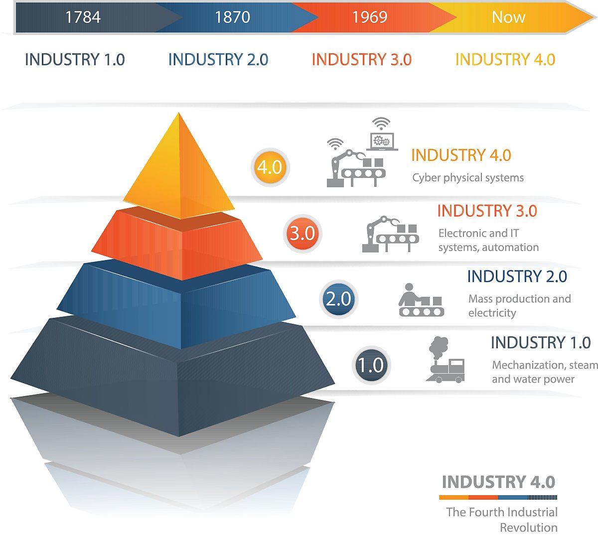

- COVID19
- The Forth Industrial Revolution
- Further Future
The Forth Industrial Revolution
인공지능(AI), 사물인터넷(IoT), 로봇기술, 드론, 자율주행차, 가상현실(VR) 등이 주도하는 차세대 산업혁명을 말한다. 이 용어는 2016년 6월 스위스에서 열린 다보스 포럼(Davos Forum)에서 포럼의 의장이었던 클라우스 슈밥(Klaus Schwab)이 처음으로 사용하면서 이슈화됐다. 당시 슈밥 의장은 "이전의 1, 2, 3차 산업혁명이 전 세계적 환경을 혁명적으로 바꿔 놓은 것처럼 4차 산업혁명이 전 세계 질서를 새롭게 만드는 동인이 될 것"이라고 밝힌 바 있다.
4차 산업혁명은 ▷1784년 영국에서 시작된 증기기관과 기계화로 대표되는 1차 산업혁명 ▷1870년 전기를 이용한 대량생산이 본격화된 2차 산업혁명 ▷1969년 인터넷이 이끈 컴퓨터 정보화 및 자동화 생산시스템이 주도한 3차 산업혁명에 이어 ▷로봇이나 인공지능(AI)을 통해 실제와 가상이 통합돼 사물을 자동적·지능적으로 제어할 수 있는 가상 물리 시스템의 구축이 기대되는 산업상의 변화를 일컫는다.
[네이버 지식백과] 4차 산업혁명 (시사상식사전, pmg 지식엔진연구소)